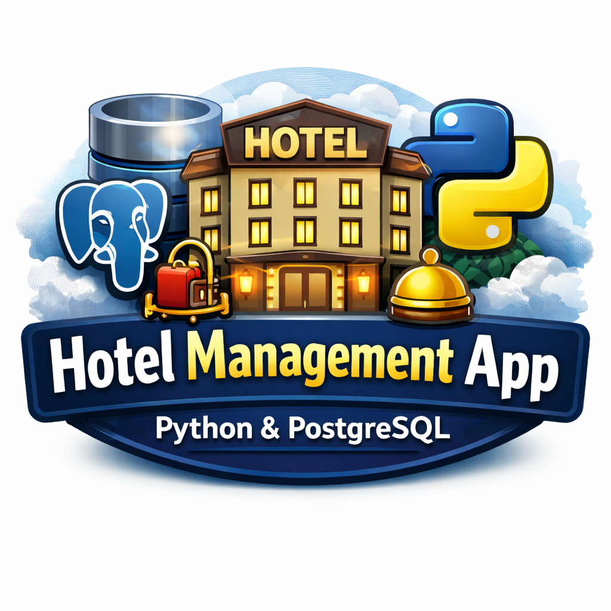

0
Projectes IT destacats

IPOP · Portfoli professional
Tècnic en sistemes microinformàtics i xarxes · Estudiant del CFGS ASIX
☁️ Cloud · ⚙️ Sistemes · 🌐 Xarxes · 🔐 Seguretat
Estudiant orientat a l’administració de sistemes, xarxes, suport IT, seguretat i tecnologies cloud, amb interès per continuar creixent en entorns professionals d’infraestructura i automatització.
Projectes IT destacats
Experiències professionals
Tecnologies principals
Sóc estudiant d’Administració de Sistemes Informàtics en Xarxa (ASIX) amb interès en la infraestructura IT, els sistemes, les xarxes, el cloud computing i l’automatització.
El meu objectiu és desenvolupar la meva carrera professional en entorns tecnològics on pugui continuar aprenent, assumir nous reptes i participar en projectes relacionats amb sistemes, suport tècnic, seguretat i serveis d’infraestructura.
Objectiu professional: iniciar la meva trajectòria en administració de sistemes, xarxes i suport IT, amb evolució cap a cloud, automatització i seguretat.
Em defineixo com una persona responsable, constant, adaptable i amb una clara orientació a l’aprenentatge continu i a la millora professional.
Institut Sa Palomera
Institut Sa Palomera

Aplicació de gestió hotelera desenvolupada en el marc d’un projecte intermodular, amb base de dades, lògica d’aplicació i administració del sistema.
Disseny i desplegament d’una infraestructura IT completa amb serveis de xarxa, sistemes Windows i Linux, seguretat i administració d’entorns corporatius.
Blanes, Girona, Espanya